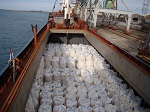
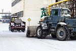
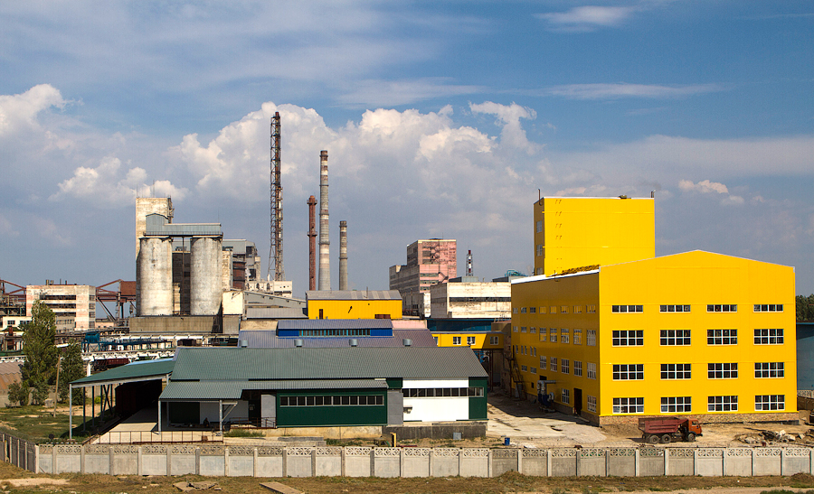

Наша продукция
Акционерное общество «Крымский содовый завод» - производитель и экспортер кальцинированной соды марок «А» и «Б». Это единственное предприятие по производству соды кальцинированной технической на юго-западе Российской Федерации.
  
В 2013 году введено в эксплуатацию производство натрия двууглекислого (пищевой соды) мощностью 20 тысяч тонн в год, а с 2008 года выпускается соль поваренная пищевая выварочная пяти наименований. Качественные характеристики производимой соды позволяют осуществлять экспортные поставки в страны Европы, Азии, Америки, Африки. На протяжении многих лет завод стабильно сотрудничает с известными компаниями мирового уровня.
Кроме основного продукта предприятие выпускает композицию «Сяйво», которая используется в производстве товаров бытовой химии, соду кальцинированную в потребительской упаковке, известь строительную. Для содержания улично-дорожной сети в зимнее время завод предлагает противогололедный реагент на основе хлористого кальция. Акционерное общество успешно внедряет широкомасштабные мероприятия по экономии энергоресурсов.
В 2008 году была введена в эксплуатацию паровая турбина мощностью 6 МВт для выработки собственной электроэнергии. В 2014 году закончено строительство когенерационной установки мощностью 14,4 МВт. Это позволит в сумме с уже вырабатываемой электроэнергией обеспечить потребность предприятия на 90%. Реализация инновационных мероприятий способствует укреплению экономики завода, увеличению налоговых отчислений, созданию дополнительных рабочих мест и снижению энергетической зависимости предприятия. Установлены скоростные вакуум-фильтры. Это улучшило качество соды, значительно снизилась влажность бикарбоната натрия, сократились энергозатраты. Среди наиболее важных проблем предприятия – вопросы охраны окружающей среды. В процессе производства кальцинированной соды аммиачным методом главными компонентами в отходящих водах являются хлориды кальция, натрия, магния. Эти соли имеют природное происхождение, так как образуются из природного сырья – поваренной соли и известняка. Ведутся технологические и маркетинговые исследования по переработке отходов для последующего применения их в народном хозяйстве.